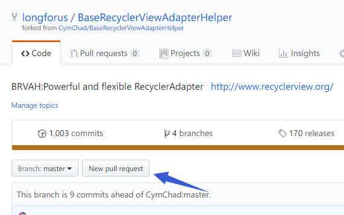
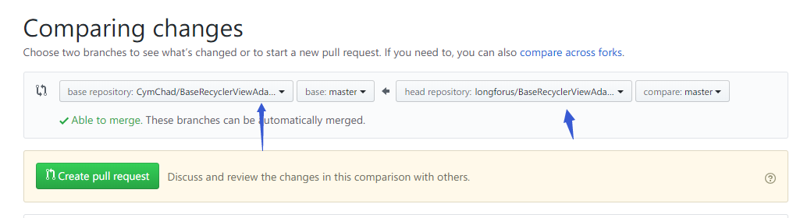
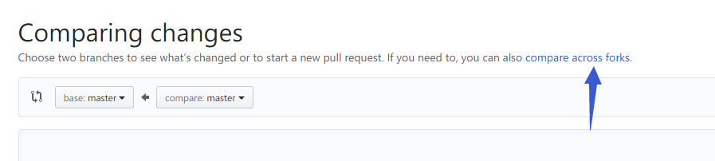
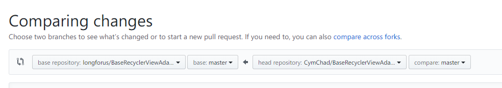
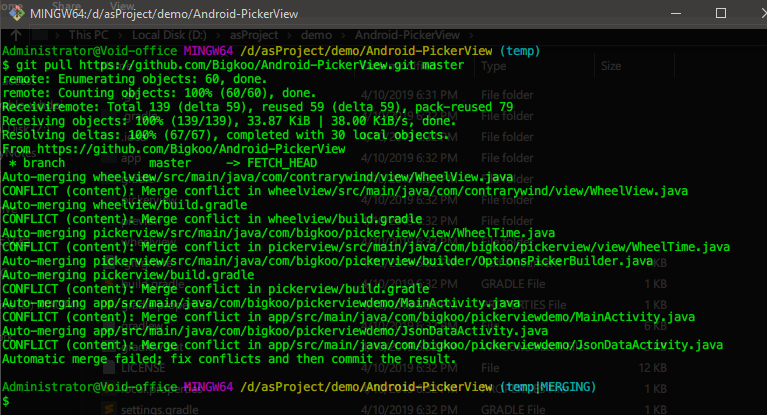
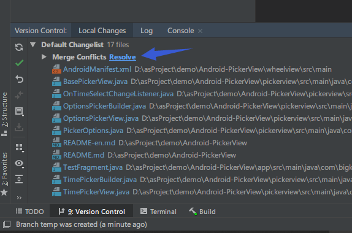
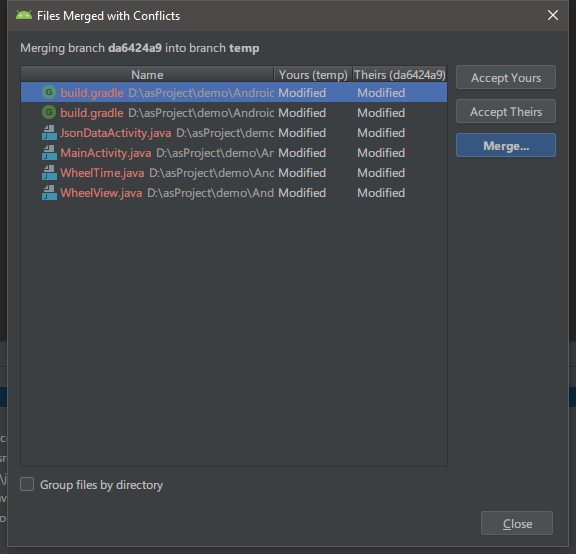

有时候我们使用gitHub上面的一些开源库,需要对库的代码进行一些修改,以符合我们自己的要求,但是如果原作者后续有了更新,我们如何让我们fork的仓库也获得这些更新呢?这个时候就需要我们new pull request,合并更新的代码.
new pull request
用途
- 我们fork原作者的仓库,修改后想把这些修改推送给原作者,合并到他的仓库中,让大家都来使用你的代码,成为原作者仓库的贡献者.
- 原作者的仓库进行了更新,让我们fork的仓库跟进这些更新.
操作


这里要注意左边的仓库是要合并到的仓库,原作者的再左边就是实现上面的功能1,向原仓库提交代码.如果要获取原仓库的更新的话,左边选择我们自己的仓库.

选了之后你会发现不能再选择仓库了,这时候点击右边的compare across forks展开.

现在右边选择原作者的仓库,创建的pull request,就是提交给你自己.
如果这次pull request没有冲突,恭喜你,自动就合并了,但是如果有冲突的话,就要自己手动操作了,官方的方法是在gitHub 桌面客户端或者git命令行里面进行合并的指导,但是命令行的话不太会用,我自己最理想的合并是使用as的冲突合并对比工具.清晰方便的就可以合并冲突的代码.今天进行了一下尝试,revert了几次,总算是搞明白了,现在记录下流程.
合并冲突
checkout 自己的仓库到本地,用as打开.
新建并切换到一个分支,我這里就叫temp了.
git checkout -b temp master,可以用命令行操作也可以在as里面用界面操作.pull 原仓库分支,
git pull https://github.com/Bigkoo/Android-PickerView.git master,这一步我没有发现怎么在as里面操作.添加原仓库为remote好像是不行的.
pull了之后就会提示冲突了,这个时候到as中点击:


解决冲突就好了.
冲突解决后.按照官方操作就好了.
1
2
3
4
5Step 2: Merge the changes and update on GitHub.
git checkout master
git merge --no-ff temp
git push origin master可以在命令行操作,也可以在as中操作.
这样我们的仓库就能更新到原仓库的最新版本了.还能保留我们的修改.
关于本文
本文作者 longforus，采用 CC BY-NC 4.0 许可协议。转载请注明出处。